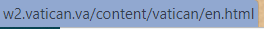

Risultati in dettaglio: conformità WCAG 2.1 livello AA#
Indice#
1. Percepibile#
Le informazioni e i componenti dell'interfaccia utente devono essere presentati agli utenti in modi in cui essi possano percepirli.
Linea guida 1.2 Media temporizzati#
Fornire alternative per i media temporizzati.
Criterio di successo 1.2.4 Sottotitoli (in tempo reale)
Per tutti i contenuti audio in tempo reale sotto forma di media sincronizzati sono forniti sottotitoli.
Esito: NON VALUTABILE
Criterio di successo 1.2.5 Audiodescrizione (preregistrata)
Per tutti i contenuti video preregistrati sotto forma di media sincronizzati è fornita una audiodescrizione.
Esito: NON VALUTABILE
Linea guida 1.3 Adattabile#
Creare contenuti che possano essere rappresentati in modalità differenti (ad esempio, con layout più semplici), senza perdere informazioni o struttura.
Criterio di successo 1.3.4 Orientamento
La visualizzazione e il funzionamento di un contenuto non dipendono dall'orientamento dello schermo, ad esempio verticale o orizzontale, a meno che questo non sia essenziale.
Esito: POSITIVO
Criterio di successo 1.3.5 Identificare lo scopo degli input
Lo scopo di ciascun campo di input per le informazioni sull'utente può essere determinato programmaticamente quando: il campo di input ha uno scopo noto, identificato nella sezione scopo dell'input per i componenti dell'interfaccia utente; e il contenuto è implementato utilizzando tecnologie che supportino l'identificazione del significato atteso dei dati inseriti del modulo.
Esito: NON VALUTABILE
Linea guida 1.4 Distinguibile#
Rendere più semplice agli utenti la visione e l'ascolto dei contenuti, separando i contenuti in primo piano dallo sfondo.
Criterio di successo 1.4.3 Contrasto (minimo)
La rappresentazione visiva del testo e di immagini contenenti testo ha un rapporto di contrasto di almeno 4.5:1, fatta eccezione per i seguenti casi: testo grande, testo non essenziale, logotipi.
Esito: NEGATIVO
SINTOMO (Pagina Home)
Utenti con difficoltà visive potrebbero non distinguere correttamente il testo dallo sfondo.
CAUSA
Differenza di contrasto testo-sfondo non sufficiente (verificato tramite il tool WAVE).
POSSIBILE SOLUZIONE
Ricontrollare i rapporti di constrasto.
SINTOMO (Pagina Calendario)
Utenti con difficoltà visive potrebbero non distinguere correttamente il testo dallo sfondo.
CAUSA
Differenza di contrasto testo-sfondo non sufficiente (verificato tramite il tool WAVE).
POSSIBILE SOLUZIONE
Ricontrollare i rapporti di constrasto, utilizzare coppie di colori che diano un contrasto più marcato.
Esempio:
Criterio di successo 1.4.4 Ridimensionamento del testo
Il testo, ad eccezione dei sottotitoli e delle immagini contenenti testo, può essere ridimensionato fino al 200 percento senza l'ausilio di tecnologie assistive e senza perdita di contenuto e funzionalità.
Esito: POSITIVO
Criterio di successo 1.4.5 Immagini di testo
Se le tecnologie utilizzate consentono la rappresentazione visiva dei contenuti, per veicolare informazioni è usato il testo, e non le immagini di testo, ad eccezione dei seguenti casi: personalizzabile, essenziale.
Esito: NEGATIVO
SINTOMO (Pagina Bollettino stampa)
Utenti con deficit visivo potrebbero non leggere tutto il contenuto della pagina.
CAUSA
Al centro della pagina è presente un'immagine contenente del testo che non si può ridimensionare e che non è leggibile dalle tecnologie assistive. L'attributo "alt" inserito nel link dell'immagine non è sufficiente per descrivere l'intera immagine.
POSSIBILE SOLUZIONE
Utilizzare un'immagine di testo e migliorare la descrizione dell'immagine.
Criterio di successo 1.4.10 Ricalcolo del flusso
Il contenuto può essere ripresentato senza perdita di informazioni o funzionalità e senza richiedere lo scorrimento in due dimensioni per: contenuto a scorrimento verticale con una larghezza equivalente a 320 CSS pixel, contenuto a scorrimento orizzontale ad un'altezza equivalente a 256 CSS pixel. Tranne per le parti del contenuto che richiedono layout bidimensionale per l'utilizzo o per comprenderne il senso.
Esito: NEGATIVO
SINTOMO (Pagina Home)
Utenti con deficit visivo potrebbero non riuscire a leggere tutto il contenuto della pagina.
CAUSA
Avendo una viewport di larghezza 1280 CSS pixel ed altezza 1024 CSS pixel, e zoomando la pagina al 400%, è necessario lo scorrimento in due dimensioni per poter visualizzare tutto il contenuto della pagina.
POSSIBILE SOLUZIONE
Rendere la pagina responsive.
Criterio di successo 1.4.11 Contrasto in contenuti non testuali
Nella presentazione visiva il rapporto di contrasto è di almeno 3:1 rispetto al colore o ai colori adiacenti per: componenti dell'interfaccia utente, oggetti grafici.
Esito: NEGATIVO
SINTOMO (Pagina Calendario)
Utenti con difficoltà visive potrebbero non distinguere correttamente l'oggetto grafico dallo sfondo.
CAUSA
Differenza di contrasto oggetto grafico-sfondo non sufficiente.
POSSIBILE SOLUZIONE
Ricontrollare i rapporti di constrasto, utilizzare coppie di colori che diano un contrasto più marcato.
Esempio:
Criterio di successo 1.4.12 Spaziatura del testo
Nei contenuti implementati utilizzando linguaggi di markup che supportano le seguenti proprietà di stile per il testo, non si verifica alcuna perdita di contenuto o funzionalità impostando quanto segue senza modificare altre proprietà di stile: altezza della linea (interlinea) di almeno 1,5 volte la dimensione del carattere, spaziatura dopo i paragrafi di almeno 2 volte la dimensione del carattere, spaziatura tra le lettere di almeno 0,12 volte la dimensione del carattere, spaziatura tra le parole di almeno 0,16 volte la dimensione del carattere. Eccezione: le lingue e le scritture che non utilizzano una o più di queste proprietà nel testo scritto sono conformi quando si può applicare il criterio alle sole proprietà esistenti per quella combinazione di lingua e scrittura.
Esito: POSITIVO
Criterio di successo 1.4.13 Contenuto con Hover o Focus
Nel caso in cui il passaggio del puntatore del mouse (hover) o il focus della tastiera rendono visibili e nascosti dei contenuti, sono soddisfatte le seguenti condizioni: congedabile, passabile, persistente. Eccezione: la presentazione visiva del contenuto aggiuntivo è controllata dal programma utente e non viene modificata dall'autore.
Esito: POSITIVO
2. Utilizzabile#
I componenti e la navigazione dell'interfaccia utente devono essere utilizzabili.
Linea guida 2.4 Navigabile#
Fornire delle funzionalità di supporto all'utente per navigare, trovare contenuti e determinare la propria posizione.
Criterio di successo 2.4.5 Differenti modalità
Rendere disponibili più modalità per identificare una pagina Web all'interno di un insieme di pagine Web, salvo il caso in cui una pagina Web sia il risultato – o una fase – di un'azione.
Esito: POSITIVO
Criterio di successo 2.4.6 Intestazioni ed etichette
Utilizzare intestazioni ed etichette per descrivere argomenti o finalità.
Esito: NEGATIVO
SINTOMO
La navigazione può risultare difficile per chi utilizza la tastiera e i lettori di schermo.
CAUSA
All'interno della pagina non esiste una struttura corretta di instestazioni e non vengono utilizzate etichette per i form.
POSSIBILE SOLUZIONE
Utilizzare correttamente le intestazioni e le etichette.
Criterio di successo 2.4.7 Focus visibile
Qualsiasi interfaccia utente utilizzabile tramite tastiera ha una modalità operativa in cui è visibile l'indicatore del focus.
Esito: NEGATIVO
SINTOMO (Pagina Home)
Gli utenti che spostano il focus tramite tastiera non sono sempre in grado di riconoscere dove esso sia.

CAUSA
Mancanza di indicatore visivo del focus
POSSIBILE SOLUZIONE
Assicurarsi che un indicatore del focus sia sempre presente e ben visibile.
SINTOMO (Pagina Calendario)
Gli utenti che spostano il focus tramite tastiera non sono sempre in grado di riconoscere dove esso sia.
CAUSA
Mancanza di indicatore visivo del focus
POSSIBILE SOLUZIONE
Assicurarsi che un indicatore del focus sia sempre presente e ben visibile.
3. Comprensibile#
Le informazioni e le operazioni dell'interfaccia utente devono essere comprensibili.
Linea guida 3.1 Leggibile#
Rendere il testo leggibile e comprensibile.
Criterio di successo 3.1.2 Parti in lingua
La lingua di ogni passaggio o frase nel contenuto può essere determinata programmaticamente ad eccezione di nomi propri, termini tecnici, parole in lingue indeterminate e parole o frasi che sono diventate parte integrante del gergo del testo immediatamente circostante.
Esito: NEGATIVO
SINTOMO (Pagina Calendario)
Utenti con difficoltà visive potrebbero non comprendere la finalità di alcune immagini.
CAUSA
I valori degli attributi alt di alcune immagini sono scritti in lingua inglese.
POSSIBILE SOLUZIONE
Correggere i valori degli attributi alt e scriverli nella lingua adottata dalla pagina.
Linea guida 3.2 Prevedibile#
Creare pagine Web che abbiano aspetto e funzionamento prevedibili.
Criterio di successo 3.2.3 Navigazione coerente
I meccanismi di navigazione che sono ripetuti su più pagine Web all'interno di un insieme di pagine Web, appaiono nello stesso ordine relativo ogni volta che si ripetono, a meno che un cambiamento sia stato avviato da un utente.
Esito: POSITIVO
Criterio di successo 3.2.4 Identificazione coerente
I componenti che hanno la stessa funzionalità all'interno di un insieme di pagine Web sono identificati in modo coerente.
Esito: POSITIVO
Linea guida 3.3 Assistenza nell'inserimento#
Aiutare gli utenti a evitare gli errori e agevolarli nella loro correzione.
Criterio di successo 3.3.3 Suggerimenti per gli errori
Se viene identificato un errore di inserimento e sono noti dei suggerimenti per correggerlo, tali suggerimenti vengono forniti all'utente, a meno che ciò non pregiudichi la sicurezza o la finalità del contenuto.
Esito: NON VALUTABILE
Criterio di successo 3.3.4 Prevenzione degli errori (legali, finanziari, dati)
Per le pagine Web che contengono vincoli di tipo giuridico o transazioni finanziarie per l'utente che gestiscono la modifica o la cancellazione e gestione di dati controllabili dall'utente in un sistema di archiviazione oppure che inoltrano le risposte degli utenti a test, è soddisfatta almeno una delle seguenti condizioni: reversibilità, controllo, conferma.
Esito: NON VALUTABILE
4. Robusto#
Il contenuto deve essere abbastanza robusto per essere interpretato in maniera affidabile da una grande varietà di programmi utente, comprese le tecnologie assistive.
Linea guida 4.1 Compatibile#
Garantire la massima compatibilità con i programmi utente attuali e futuri, comprese le tecnologie assistive.
Criterio di successo 4.1.3 Messaggi di stato
Nei contenuti implementati utilizzando i linguaggi di marcatura, i messaggi di stato possono essere determinati programmaticamente tramite ruolo o proprietà in modo tale che possano essere presentati all'utente mediante tecnologie assistive senza ricevere il focus.
Esito: NON VALUTABILE